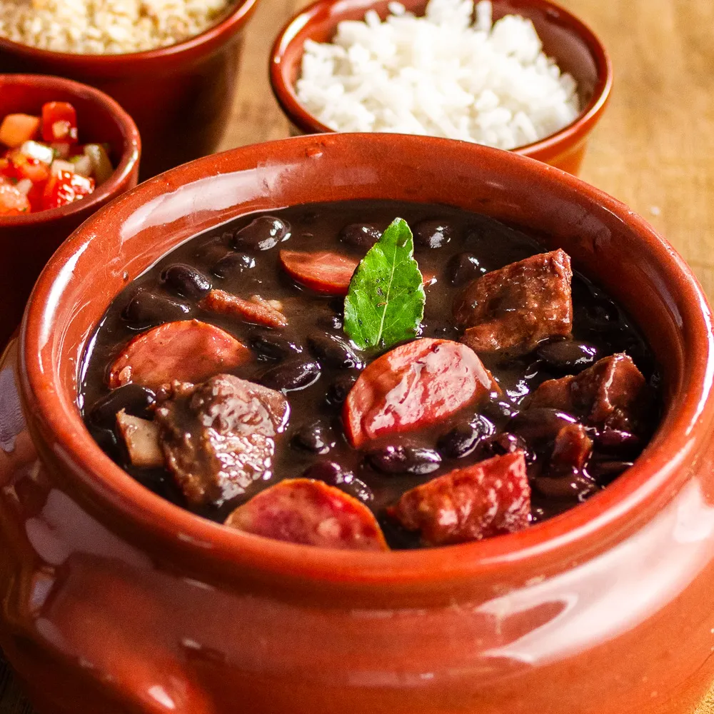
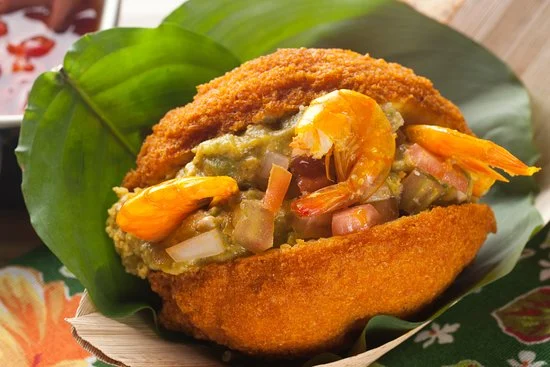
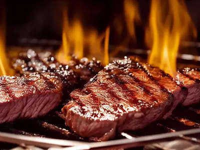
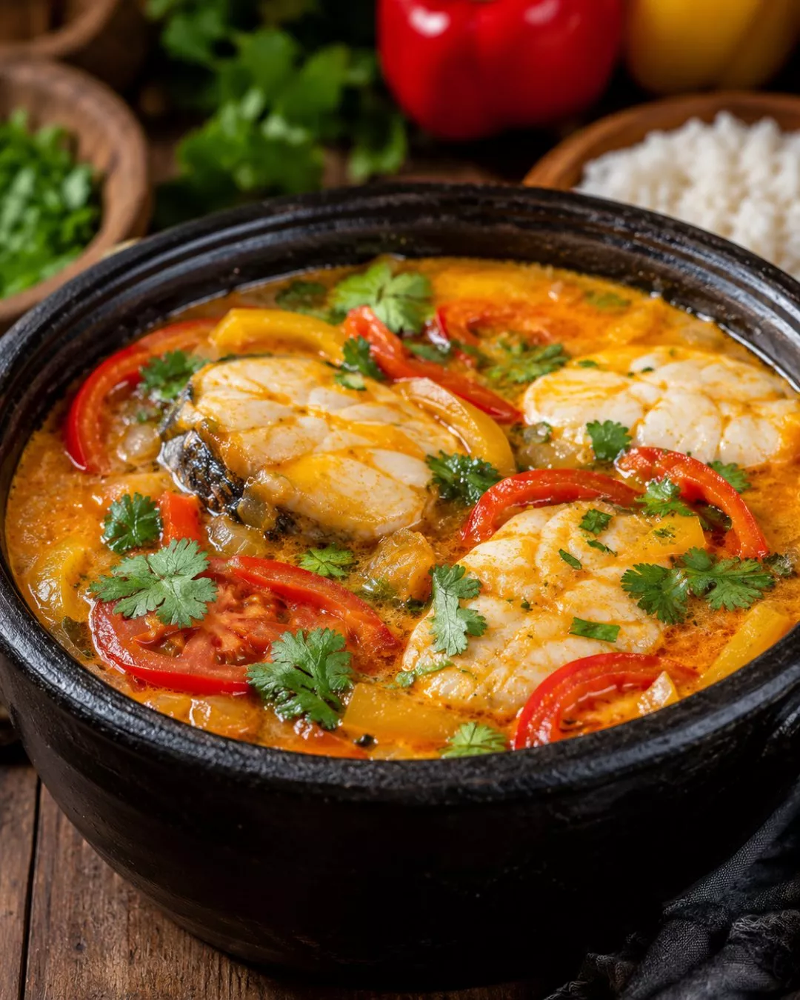
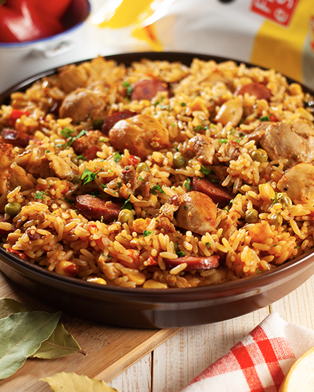
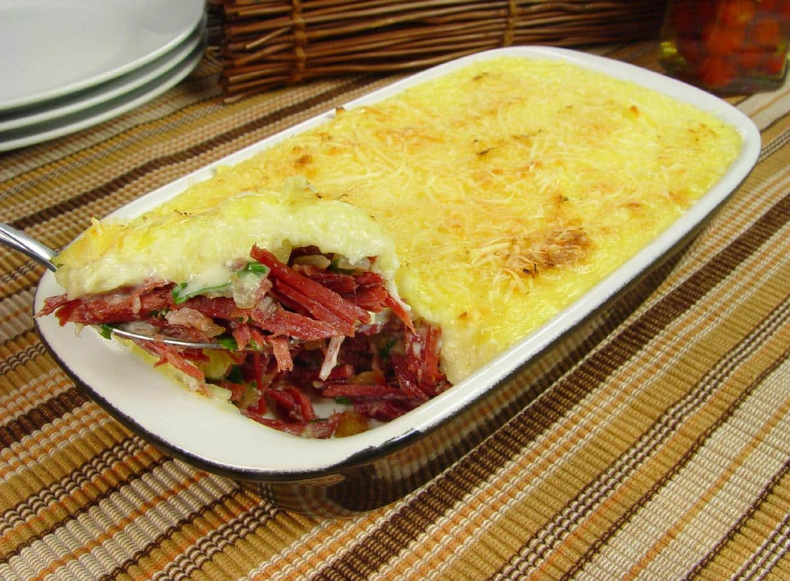
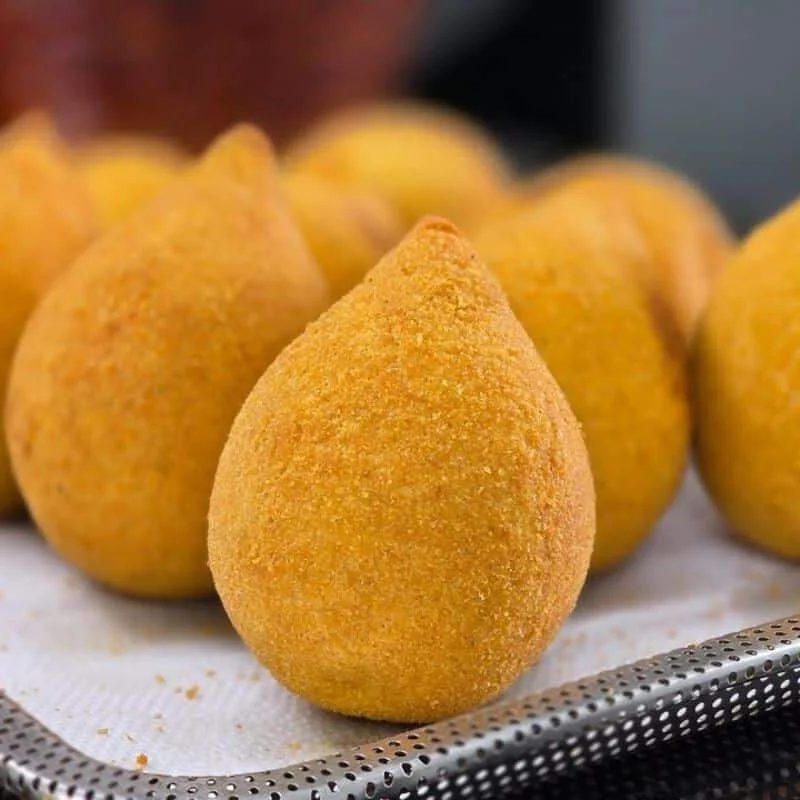
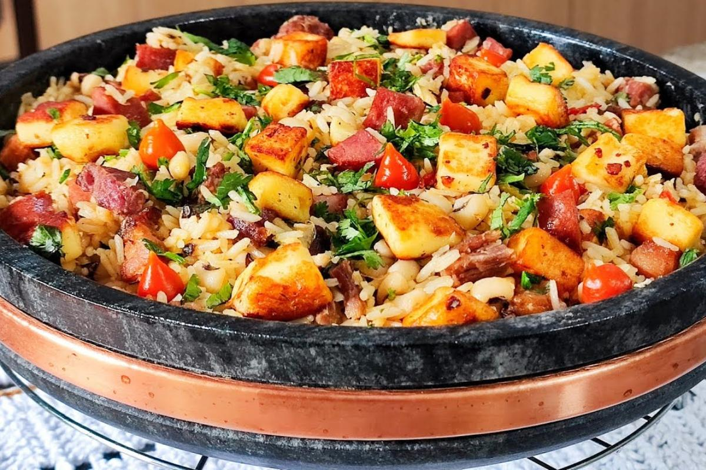

Pratos Populares da Culinária Brasileira
A culinária brasileira é muito diversificada e reúne sabores, ingredientes e tradições de diferentes regiões do país. Alguns pratos se tornaram símbolos da cultura brasileira e são apreciados por pessoas de todo o país.
Diversidade da culinária brasileira
- Influência de diferentes culturas
- Variedade de ingredientes
- Pratos tradicionais de cada região
- Uso de ingredientes típicos brasileiros
Sabores de diferentes regiões
- Norte
- Nordeste
- Centro-Oeste
- Sudeste
- Sul
Pratos Populares
| Prato | Origem | Tipo de prato | Ingrediente principal | |
 |
Feijoada | Rio de Janeiro | Prato principal | Feijão-preto |
 |
Acarajé | Bahia | Comida de rua | Feijão-fradinho |
 |
Churrasco | Rio Grande do Sul | Prato principal | Carne bovina |
 |
Moqueca | Bahia / Espírito Santo | Prato principal | Peixe |
 |
Pão de queijo | Minas Gerais | Lanche | Polvilho e queijo |
 |
Galinhada | Goiás / Minas Gerais | Prato principal | Frango e arroz |
 |
Escondidinho | Nordeste | Prato principal | Carne-seca e mandioca |
 |
Tacacá | Pará | Caldo / comida típica | Tucupi e mandioca |
 |
Coxinha | São Paulo | Salgado | Frango |
 |
Baião de dois | Ceará / Nordeste | Prato principal | Arroz e feijão |